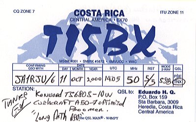

Flash ! DX


 |
|
|
|
 |
|
|
[Back Issues May.2017]
TIME:UTC(JST-09:00)
Report from JA1RJU(PM95sq)
31.May.2017(15:00d)
BA4SI 23:35 50.276-1689 WSJT JT65a -12dB QSO with JA1
--------------------------------------------------------------------------------
BG3ITB 00:00 50.276-**** WSJT JT65a QSO with JA1/2/3
BD7BW 00:15 50.276-**** WSJT JT65a QSO with JA1/2/3/5
BH5HAI 00:27 50.276-937 WSJT JT65a -01dB QSO with BG3ITB
EX8MLT 02:27 50.276-836 WSJT JT65a into JA3
UN8GC 02:29 50.276-1689 WSJT JT65a -21dB QSO with JA5
UN7TW 02:30 50.276-834 WSJT JT65a -21dB QSO with EX8MLT
UN8GC 02:33 50.276-836 WSJT JT65a -06dB QSO with JA1/2
UN8GC 02:42 50.276-2039 WSJT JT65a -08bD QSO with UN7TW
EX8MLT 02:45 50.276-834 WSJT JT65a -06dB QSO with JA7
UN7TW 02:51 50.276-2289 WSJT JT65a -12dB QSO with JA1/2/3/4
EX8MLT 02:57 50.276-**** WSJT JT65a -01dB QSO with JA1-4/5/6/7
DS3EXX 03:04 50.276-1144 WSJT JT65a -01dB CQ DX
EX8MLT 03:25 50.276-**** WSJT JT65a -03dB QSO with JA1-4/5/6/7
BG4DRL 04:05 50.276-566 WSJT JT65a -01dB QSO with JA1/2/3/4/5
UN7TW 04:29 50.276-**** WSJT JT65a -06dB QSO with JA1/2/3/4
BD0AAI 04:39 50.276-2117 WSJT JT65a -11dB QSO with JA8
9K2GS 04:57 50.276-579 WSJT JT65a -03dB QSO with JA1-5
9K2GS 05:15 50.276-**** WSJT JT65a -05dB QSO with JA1/2/3-5
UT4EO 05:32 50.276- WSJT JT65a -25dB CQ
9K2GS 05:43 50.276-708 WSJT JT65a -13dB QSO with BD0AAI
UR5LAK 05:46 50.276-1608 WSJT JT65a -21dB CQ
UT4ED 05:48 50.276-1947 WSJT JT65a -19dB QSO with JA1
UR0MC 06:00 50.106.5 CW CQ
9K2GS 06:01 50.276-688 WSJT JT65a -15dB QSO with JA4
UR5LAK 06:02 50.276-1610 WSJT JT65a -08dB QSO with JA2
UN6T 06:02 50.276-463 WSJT JT65a -17dB QSO with UT7LK
UN7TK 06:03 50.276-1054 WSJT JT65a -21dB QSO with S57TW
UT6T 06:12 50.104 CW CQ
UN8OM 06:15 50.101 CW CQ
UB7K 06:18 50.102 CW RST579/599
UR0MC 06:40 50.098 CW CQ CQ
9H1TX 06:45 50.092 CW CQ RST579
EX8M 07:10 50.099.2 CW CQ
UR0MC 07:20 50.097 CW CQ
EX8MLT 07:24 50.276-437 WSJT JT65a -07dB CQ
UN7TW 07:24 50.276-978 WSJT JT65a -08dB QSO with VK6KXW
EA6VQ 07:26 50.276-1463 WSJT JT65a -24dB CQ
UR0MC 07:32 50.276-2248 WSJT JT65a -14dB CQ
UN7QX 07:38 50.105 CW CQ
EX8MLE 07:40 50.106 CW CQ
E73F 07:48 50.081 CW CQ weak
(4O6AH 07:48 50.101 CW QEV info)
UT7QF 09:11 50.276-1985 WSJT JT65a QSO with JA6
EX8MU 09:11 50.276-**** WSJT JT65a QSO with JA1-JA6
4O6AH 09:28 50.096 CW QSO with JA1-6
(4U1ITU 09:50 50.091 CW weak)
UN3GX 10:18 50.102.5 CW RST599/599(QSO)
YO9HP 10:32 50.091 CW CQ QSB
5B4AGN 10:42 50.098 CW RST599 UP1
YO9HP 11:27 50.101 CW CQ QSB
EX8M 11:43 50.098 CW CQ
(4U1ITU 11:48 50.094 CW weak)
EX8MLT 11:55 50.276-723 WSJT JT65a -05dB QSO JA2
UN6TA 11:57 50.276-1517 WSJT JT65a -18dB QSO with JA4
F5LNU 12:01 50.276-1243 WSJT JT65a QSO with JA4
UN6T 12:10 50.096 CW QSB
HL5BMX 12:17 50.096 CW CQ
TK5JJ 12:01 50.276-1344 WSJT JT65a into JA1
YO3GNF 12:21 50.276-2347 WSJT JT65a into JA1
SV9CVY 14:16 50.276-1477 WSJT JT65a -18dB QSO with JA4
SV9CVY 14:18 50.276-1474 WSJT JT65a -24dB CQ
EX8MLT 14:22 50.276-1029 WSJT JT65a -01dB CQ
SV9CVY 14:23 50.276-**** WSJT JT65a QSO with JA1/2/3/4/5/6
SV9CVY 14:36 50.276-1474 WSJT JT65a -24dB CQ Asia
SV9CVY 14:41 50.276-1477 WSJT JT65a -14dB QSO with JA1-6
SV9CVY 14:42 50.276-1621 WSJT JT65a -08dB CQ Asia
SV9CVY 14:46 50.276-1620 WSJT JT65a -17dB QSO with JA6
Report from JA1RJU(PM95sq)
30.May.2017(15:00c)
BU2BV 23:21 50.276-988 WSJT JT65a -23dB QSO with JA9
BA4SI 23:41 50.276-2395 WSJT JT65a -15dB QSO with JA5
K7JA 23:42 50.276-770 WSJT JT65a into JA1
BU2BV 23:53 50.276-1539 WSJT JT65a -18dB CQ(PL05)
--------------------------------------------------------------------------
BA4SI 00:15 50.276-2416 WSJT JT65a -09dB QSO with JA8
BH4QFI 00:22 50.276-489 WSJT JT65a into JA1/JA2
NH6Y 01:22 50.276-2004 WSJT JT65a QSO with JA1/2/3
BA1PK 01:43 50.276-1059 WSJT JT65a -17dB QSO with BD0AAI
BD0AAI 01:44 50.276-1095 WSJT JT65a -18dB CQ
BD0AAI 02:52 50.276-1011 WSJT JT65a -20dB/-10dB(QSO 30W)
UK8OM 03:00 50.101 CW CQ
6L0NJ/B 03:00 50.051 CW Beacon
UN3GX 03:10 50.098 CW
BA1PK 03:21 50.276-1415 WSJT JT65a -02dB (QSO B4)
BD0AAI 03:26 50.276-1051 WSJT JT65a -07dB CQ
BD0AAI 03:27 50.276-1892 WSJT JT65a -01dB QSO with BG8IXQ
HL1IWD 03:31 50.105 CW CQ
BG4IHP 03:34 50.276-1355 WSJT JT65a -03dB QSO with JA3
EX8MLT 03:42 50.276-695 WSJT JT65a -07dB QSO with JA5
UN7TW 03:43 50.276-375 WSJT JT65a -08dB QSO with YA7XZT
BD0AAI 03:44 50.276-1296 WSJT JT65a -15dB CQ
EX8MLT 03:48 50.276-697 WSJT JT65a -08dB QSO with JA3
EX8MLT 03:53- 50.276-**** WSJT JT65a QSO with JA1/2/3
EX8MLT 04:16- 50.276-**** WSJT JT65a -10dB QSO with JA1/2/3
EX8MLT 04:26- 50.276-**** WSJT JT65a -09dB QSO with JA1/2/3/4
UN7TW 04:27 50.276-1343 WSJT JT65a -04dB QSO with JA1/2/3/9
UN7QX 04:24 50.107 CW CQ
EX8M 04:27 50.100 CW
UN7TW 04:27 50.276-1343 WSJT JT65a -04dB QSO with JA1
UN7TW 04:35 50.276-1703 WSJT JT65a -03dB QSO with JA9
EX8MLT 04:36 50.276-693 WSJT JT65a -12dB QSO with JA3
EX8MLT 04:36 50.276-693 WSJT JT65a -01dB QSO with JA7
SV2JAO 04:46 50.276-813 WSJT JT65a into JA6
EX8MLT 05:00 50.276-633 WSJT JT65a -14dB QSO with JA9
BD0AAI 05:03 50.276-1283 WSJT JT65a -25dB QSO with SV2DCD
EX8MLT 05:12 50.276-693 WSJT JT65a -03dB QSO with JA1
SV8DTD 05:14 50.276-807 WSJT JT65a QSO with JA6
YO8RHI 05:17 50.276-1028 WSJT JT65a into JA1
SV8DTD 05:24 50.276-874 WSJT JT65a into JA5
SV1DH 05:25 50.276-1942 WSJT JT65a QSO with JA2
5B4AIF 05:27 50.276-1488 WSJT JT65a QSO with JA2
EX8M 05:36 50.100 CW CQ
SV1DH 05:39 50.276-1500 WSJT JT65a QSO with JA3's
UN7TW 05:40 50.276-628 WSJT JT65a -01dB QSO with JA9
UR0MC 05:40 50.276-894 WSJT JT65a into JA1
5B4AIF 05:42 50.276-2202 WSJT JT65a QSO with JA5
UR0MC 06:10 50.276-941 WSJT JT65a -10dB CQ
UR0MC 06:14 50.276-941 WSJT JT65a -10dB QSO with JA3
5B4AIF 06:16 50.276-**** WSJT JT65a into JA2/3/4/9
UN6T 06:25 50.101.4 CW CQ CQ
5B4AAB 06:46 50.276-1824 WSJT JT65a -17dB CQ
5B4AIF 06:52 50.276-2371 WSJT JT65a into JA2/3/4
SV8JNL 06:58 50.276-1987 WSJT JT65a -26dB CQ
SV1DH 07:06 50.276-2242 WSJT JT65a -10dB CQ
EK8BAK 10:12 50.276-2499 WSJT JT65a into JA3
SV9CYV 10:23 50.276-385 WSJT JT65a into JA3
E73DN 10:40 50.276-1756 WSJT JT65a into JA2
SV9CVY 10:44 50.276-1099 WSJT JT65a -09dB/-15dB(QSO)
E73DN 10:49 50.276-1781 WSJT JT65a into JA2/JA3
SV8DTD 10:54 50.276-741 WSJT JT65a into JA1
A45XR 10:58 50.276-1828 WSJT JT65a QSO with JA0
SV9CVY 11:00 50.276- WSJT JT65a CQ
SV8DTD 11:04 50.276-749 WSJT JT65a -02dB/-02dB(QSO)
SV9CVY 11:06 50.276-1534 WSJT JT65a -11dB CQ Asia
A45XR 11:06 50.276- WSJT JT65a CQ
(4O6AH 11:40- 50.096 CW into JA2)
UK8OM 11:59 50.100 CW CQ
UN6T 12:00 50.101.7 CW CQ
(UB7K 12:07- 50.107 CW --)
UN8GC 13:07 50.097 CW CQ
9K2GS 13:26 50.276-**** WSJT JT65a into JA1/2/3/4/5/6
EX8MLE 13:40 50.107.3 CW RST599/599
9K2GS 14:24 50.276-910 WSJT JT65a -14dB/-11dB(QSO)
IK4ISR 14:34 50.276-1355 WSJT JT65a -22dB CQ
UN8GC 14:44 50.276-2254 WSJT JT65a -02dB into JA1
IK4ISR 14:49 50.276-1355 WSJT JT65a -22dB CQ
UN8GC 14:49 50.276-2254 WSJT JT65a -02dB into JA1
UN7TK 14:52 50.276-631 WSJT JT65a -22dB CQ
I4EAT 15:27 50.276-1344 WSJT JT65a -01dB QSO with DS4EOI
EA6VQ 15:28 50.276-**** WSJT JT65a -7dB into JA1
Report from JA1RJU(PM95sq)
29.May.2017(15:00d)
BG8IXQ 02:48 50.276-1408 WSJT JT65a QSO with JA5
BG4DRL 02:49 50.276-2146 WSJT JT65a -18dB QSO with BG8IXQ
BA1PK 02:48 50.276-1574 WSJT JT65a QSO with BA1PK
BG8IXQ 02:50 50.276-2145 WSJT JT65a -19dB QSO with BG4DRL
BH5HAI 02:56 50.276-828 WSJT JT65a -02dB QSO with DU7/PA0HIP
BG4IHP 02:58 50.276-579 WSJT JT65a QSO with JA5
BH5HAI 03:05 50.276-1488 WSJT JT65a -09dB QSO with BA1PK
HL2ADY 03:58 50.276-1305 WSJT JT65a -11dB CQ
HL2ADY 04:00 50.276-1304 WSJT JT65a -14dB QSO with JA3
HL2ADY 04:06 50.276-1304 WSJT JT65a -15dB CQ
BD6JO 04:09 50.276-2211 WSJT JT65a -23dB QSO with JA5
HL4CNR 04:14 50.276-843 WSJT JT65a -01dB QSO with JA2
HL2ADY 04:30 50.276-1307 WSJT JT65a -01dB QSO with JA2
BX2AB 04:40 50.276-430 WSJT JT65a -04dB CQ
BH5HAI 04:47 50.276-2190 WSJT JT65a -04dB QSO with BD6JO
BD6JO 04:54 50.276-2181 WSJT JT65a QSO with JA4
BD6JO 05:02 50.276-2179 WSJT JT65a QSO with JA6
EA8DBM 07:24 50.276-615 WSJT JT65a into JA1
EA8DBM 07:56 50.276-1810 WSJT JT65a QSO with JA1
EA8DBM 08:00 50.276-1848 WSJT JT65a -23dB QSO with JA2
EA8DBM 08:06 50.276-1847 WSJT JT65a -19dB QSO with JA1
EA8DBM 08:29- 50.276-1847 WSJT JT65a -19dB into JA1.2.3.4.0
SV9CVY 08:47 50.276-1103 WSJT JT65a -19dB into JA1
UN7TW 09:00- 50.276-1093 WSJT JT65a -14dB QSO with DU7/PA0HIP & JA's
EA8DBM 09:00- 50.276-1847 WSJT JT65a -15dB into JA1.2.3.4.0
EA8DBM 09:02 50.276-1845 WSJT JT65a -19dB QSO with JA3
S59A 09:04 50.276-2106 WSJT JT65a -16dB CQ DX(RR73)
F5LNU 09:05 50.276-1242 WSJT JT65a into JA5
UN7TW 09:08 50.276-917 WSJT JT65a -03dB QSO with JA1
S59A 09:08 50.276-2268 WSJT JT65a -08dB QSO with JA1
UN7TW 09:10 50.276-1083 WSJT JT65a -01dB QSO with JA2
S59A 09:10 50.276-1827 WSJT JT65a -08dB QSO with JA1
UN7TW 09:14 50.276-652 WSJT JT65a -01dB QSO with DS3CHK
F5BZB 09:14 50.276-2270 WSJT JT65a into JA1
EA8DBM 09:14 50.276-1245 WSJT JT65a into JA7
F5BZB 09:16 50.276-1012 WSJT JT65a QSO with JA1
UN7TW 09:18 50.276-656 WSJT JT65a -02dB QSO with JA3
UN7TW 09:26 50.276-673 WSJT JT65a -01dB QSO with HL2CFY
F5BZB 09:26 50.276-1020 WSJT JT65a into JA9
UN7TW 09:40 50.276-849 WSJT JT65a -03dB QSO with JA1
F5LNU 09:42 50.276-2252 WSJT JT65a into JA4
EA6VQ 09:56 50.276-1140 WSJT JT65a into JA3
EA6VQ 10:02- 50.276-**** WSJT JT65a into JA2/3/4/5
EA8DBM 10:06 50.276-537 WSJT JT65a into JA3
DS4EOI 10:07 50.276-1142 WSJT JT65a -10dB calling EA8DBM
EA6VQ 10:08 50.276-**** WSJT JT65a into JA2/3/6
F5LNU 10:08 50.276-1245 WSJT JT65a into JA6
EA3ZD 10:10 50.276-1147 WSJT JT65a QSO with JA3
EA8DBM 10:10- 50.276-**** WSJT JT65a into JA3/4/5/6
EA6VQ 10:10- 50.276-**** WSJT JT65a into JA2/3/4/6
BA4SI 10:12 50.276-1705 WSJT JT65a -21dB QSO with UN6T
EA3LL 10:14 50.276-1150 WSJT JT65a into JA3
EA6VQ 10:18- 50.276-**** WSJT JT65a into JA1/2/3/4/6
UN7TW 10:22 50.276-320 WSJT JT65a -12dB QSO with JA6
EA6VQ 10:20- 50.276-**** WSJT JT65a into JA1/2/3/4/6
UN6T 10:21 50.276-241 WSJT JT65a into JA6
UN6T 10:26 50.102 CW CQ RST589
UN7TW 10:30 50.276-1000 WSJT JT65a -01dB/-01dB(QSO)
DS4EOI 10:33 50.276-1137 WSJT JT65a -05dB CQ EU
HL2CFY 10:33 50.276-738 WSJT JT65a -18dB CQ
EA6VQ 10:34- 50.276-**** WSJT JT65a into JA1/0
EA6SX 10:38 50.276-454 WSJT JT65a into JA1
EA3LL 10:39 50.276-1305 WSJT JT65a into JA3
5B4AIF 10:38- 50.276-1847 WSJT JT65a -24dB into JA1/7
5B4AIF 10:38- 50.276-1847 WSJT JT65a -24dB into JA1/7
EA6VQ 10:34- 50.276-1866 WSJT JT65a into JA1
5B4AIF 10:50- 50.276-**** WSJT JT65a into JA1/2/3/7/9
EA3LL 10:55- 50.276-**** WSJT JT65a into JA3/9
HL2CFY 10:59 50.276-748 WSJT JT65a -01dB QSO with JA4
BH4UTT 11:13 50.276-487 WSJT JT65a into JA8
HL2CFY 11:15 50.276-748 WSJT JT65a -01dB CQ
BA1PK 11:36 50.276-529 WSJT JT65a into JA8
BA1PK 11:38 50.276-530 WSJT JT65a -21dB QSO with JA8
BG4DRL 11:50 50.276-1357 WSJT JT65a -21dB CQ
BG4DRL 11:52 50.276-1351 WSJT JT65a -21dB QSO with JA7
BG4DRL 12:08 50.276-1266 WSJT JT65a -13dB CQ
HL2CFY 12:27 50.276-1520 WSJT JT65a -04dB CQ
DS3CHK 12:40 50.276-1351 WSJT JT65a -01dB CQ
BG2ATH 13:41 50.276-1517 WSJT JT65a -07dB CQ
BG2ATH 13:49 50.276-1528 WSJT JT65a -02dB QSO with JA1/2/7
BG2ATH 14:28 50.276-1766 WSJT JT65a -11dB CQ
BG2ATH 14:40 50.276-1998 WSJT JT65a -01dB/-06dB(QSO 30W)
(JA3/4/5/6/JD1 01:00→ 50.276-**** WSJT Good Es/Sc Prop)
Report from JA1RJU(PM95sq)
28.May.2017(15:00c)
KL7HBK 23:16 50.276-1040 WSJT JT65a QSO with JA1
KL7HBK 23:31 50.276-982 WSJT JT65a -01dB into JA1
HL2CFY 23:33 50.276-978 WSJT JT65a -04dB QSO with JA1
HL4EOI 23:33 50.276-1341 WSJT JT65a -13dB CQ(PM36)
HL2CFY 23:35 50.276-785 WSJT JT65a -02dB CQ
HL4BPL 00:02 50.276-1237 WSJT JT65a QSO with JA1
BD9BU 00:56 50.276-1230 WSJT JT65a into JA1
BG8IXQ 01:16 50.276-1669 WSJT JT65a -19dB CQ(OL39)
BG8IXQ 01:18 50.276-1664 WSJT JT65a -20dB QSO with JA1
BG8IXQ 01:30 50.276-1790 WSJT JT65a -09dB CQ DX
BG8IXQ 01:32 50.276-1793 WSJT JT65a -12dB QSO with JA1
BH5HAI 02:18 50.276-944 WSJT JT65a -05dB QSO with JA6
HL2CFY 04:49 50.276-1005 WSJT JT65a -21dB CQ
HL2CFY 04:53 50.276-1006 WSJT JT65a -12dB CQ
HL2CFY 05:05 50.276-1007 WSJT JT65a -09dB CQ
HL2CFY 05:21 50.276-1003 WSJT JT65a -22dB CQ
HL2CFY 05:42 50.276-1007 WSJT JT65a QSO with JA1
Report from JA1RJU(PM95sq)
27.May.2017(15:00c)
KG6DX 23:48 50.276-1019 WSJT JT65a -07dB CQ
KG6DX 23:50 50.276-1019 WSJT JT65a -09dB CQ
-----------------------------------------------------------------------------
KG6DX 00:14 50.276-998 WSJT JT65a -12dB QSO with JA3
KG6DX 00:18 50.276-997 WSJT JT65a -10dB QSO with JA0
KG6DX 00:22 50.276-997 WSJT JT65a -10dB QSO with JA4
BD7IS 01:46 50.276-1268 WSJT JT65a -22dB QSO with JA6
BD7IS 03:12 50.276-1841 WSJT JT65a -24dB QSO with JA2
BD7IS 03:14 50.276-1841 WSJT JT65a -17dB CQ(OL63)
BD7IS 03:18 50.276-1741 WSJT JT65a -24dB CQ
HL2CFY 03:19 50.276-912 WSJT JT65a -17dB CQ
9M2/JE1SCJ 03:28 50.276-1336 WSJT JT65a into JA3
HL2CFY 03:31 50.276-914 WSJT JT65a -16dB QSO with JA2
VR2XRW 03:59 50.276-2047 WSJT JT65a -01dB CQ
VR2XRW 04:07 50.276-2052 WSJT JT65a -04dB QSO with JA2
HL2CFY 04:15 50.276-929 WSJT JT65a -15dB QSO with JA1
BH5HAI 04:51 50.276-220 WSJT JT65a -03dB QSO with JA6
6L0NJ/B 05:40- 50.051 CW Beacon
VR2SIX/B 05:40- 50.075 CW Beacon
KR7O 06:54 50.276-922 WSJT JT65a into JA1
KR7O 07:14 50.276-620 WSJT JT65a -23dB QSO with JA1
SV1DH 07:19 50.276-1814 WSJT JT65a open to JA1
HL1JLF 07:36 50.276-2046 WSJT JT65a -09dB QSO with JA7
K7CW 07:48 50.276-1239 WSJT JT65a -20dB Calling to JA0
SP3RNZ 07:53 50.276-798 WSJT JT65a open to JA3
DS3CHK 08:00 50.276-1341 WSJT JT65a -15dB QSO with DS4EOI
I6WJB 08:15 50.276-896 WSJT JT65a open to JA1
6K2ILX 08:18 50.276-1339 WSJT JT65a -02dB QSO with HL2CFY
S59A 08:12 50.276-901 WSJT JT65a open to JA1
HL1JLF 08:22 50.276-2110 WSJT JT65a -17dB QSO with JA0
(E31A 08:46 50.110 CW QRV!)
SV9CVY 09:10 50.276-1048 WSJT JT65a QSO with JA3
SV9CVY 09:17 50.276-1091 WSJT JT65a -19dB QSO with JA6
BG4IHP 09:48 50.276-455 WSJT JT65a -05dB QSO with JA4
(JA2-JA0 & JA7/8-00:00→ 50.276-**** WSJT Good Es/Sc Prop)
Report from JA1RJU(PM95sq)
26.May.2017(15:00c)
W5LDA 23:45 50.276--1685 WSJT JT65a into JA3
W5LDA 23:46 50.276-985 WSJT JT65a QSO with JA9
KB7IJ 23:46 50.276-1277 WSJT JT65a QSO with JA0
W5LDA 23:47 50.276-1685 WSJT JT65a QSO with JA3
N5GD 23:48 50.276-1274 WSJT JT65a QSO with JA0
W5ADD 23:49 50.276-1707 WSJT JT65a QSO with JA3
KB7IJ 23:50 50.276-1939 WSJT JT65a QSO with JA1
KL7HBK 23:54 50.276-2288 WSJT JT65a into JA1
N5DG 23:58 50.276-2239 WSJT JT65a into JA1
N5DG 00:00 50.276-2239 WSJT JT65a into JA1
HL4BPL 00:01 50.276-938 WSJT JT65a -12dB CQ
W4UDH 00:02 50.276-1286 WSJT JT65a into JA1
K5GZR 00:05 50.276-1941 WSJT JT65a into JA1
KA4WJA 00:07 50.276-1524 WSJT JT65a into JA2
HL4TVU 00:09 50.092 CW CQ DX RST599
W5ADD 00:14 50.276-2240 WSJT JT65a into JA1
KB7IJ 00:20 50.276-833 WSJT JT65a QSO with JA1
W5ADD 00:30 50.276-971 WSJT JT65a QSO with JA4
K6EU 00:41 50.276-2242 WSJT JT65a into JA7
N5DG 00:46 50.276-659 WSJT JT65a QSO with JA1
K6EU 00:49 50.276-2388 WSJT JT65a QSO with JA2
N6ML 00:56 50.276-662 WSJT JT65a QSO with JA1
W0PTI 00:58 50.276-657 WSJT JT65a into JA1
N6ML 01:08 50.276-1647 WSJT JT65a -14dB QSO with JA1
N6ML 01:10 50.276-1648 WSJT JT65a -13dB CQ DX
K6EU 01:11 50.276-2435 WSJT JT65a into JA2
W6XK 01:12 50.276-1425 WSJT JT65a into JA1
N6ML 01:20 50.276-1657 WSJT JT65a QSO with JA0
KR7O 01:21 50.276-1095 WSJT JT65a -17dB CQ HL/BY
K6EU 01:24 50.276-1651 WSJT JT65a into JA1/JA6
W6XK 01:28 50.276-2402 WSJT JT65a QSO with JA0
KG6DX 01:29 50.276-2239 WSJT JT65a -18dB QSO with JA7
VR2XMT 01:32 50.276-805 WSJT JT65a -06dB QSO with BH4TVU
VR2XMT 01:36 50.276-806 WSJT JT65a -04dB QSO with JA2
WA6OSX 01:40 50.276-2219 WSJT JT65a into JA1
VR2XMT 01:44 50.276-808 WSJT JT65a -03dB QSO with JA1
VR2XMT 01:46 50.276-808 WSJT JT65a -06dB CQ DX(OL72)
VR2XMT 01:56 50.276-806 WSJT JT65a -13dB CQ DX
VR2XMT 02:16 50.276-810 WSJT JT65a -21dB CQ DX
DU1/PA0HIP 03:05 50.276-1584 WSJT JT65a -15db into JA1
DU1/PA0HIP 03:17 50.276-1582 WSJT JT65a -15db QSO with JA1
DU1/PA0HIP 03:45 50.276-1588 WSJT JT65a -01db/08dB(QSO 40W)
DU1/PA0HIP 03:59 50.276-1588 WSJT JT65a -01db QSO with WM7H
DU1/PA0HIP 04:27 50.276-1590 WSJT JT65a -01db QSO with JA6
DU1/PA0HIP 04:41 50.276-1598 WSJT JT65a -11db QSO with JA3
DU1/PA0HIP 05:05 50.276-1245 WSJT JT65a -14db QSO with JA1
KG6DX 06:34 50.276-1513 WSJT JT65a -23dB CQ(QK23)
(JA2-JA0 & JA7/8-06:00→ 50.276-**** WSJT Good Es/Sc Prop)
Report from JA1RJU(PM95sq)
25.May.2017(15:00c)
HL2ADY 02:04 50.276-1149 WSJT JT65a -15dB QSO with JA1
HL2ADY 02:20 50.276-914 WSJT JT65a -11dB QSO with JA1
HL2ADY 02:33 50.276-1230 WSJT JT65a -20dB CQ
(JA2-JA5/6/9 & JA8-08:00→ 50.276- WSJT Good Es/Sc Prop)
Report from JA1RJU(PM95sq)
24.May.2017(15:00b)
6L0NJ/B 02:45- 50.051 CW Beacon
(JA2-JA6/JR6-0100z→ & JA6/8 08:00z→ 50.276 WSJT Good Es/Sc Prop)
●VK3AKK/VK3NW Ken SK (2017/05/24 03:30z)
6mでアクティブにQRVして多くのJA局にお馴染みだったVK3AKK/Kenが5/24日にSK(死去)したとVK3OT/VK3ZAZ・Steveから連絡が有った。VK3AKK & VK3NWはオーストラリアが52MHz帯で運用していた頃からアクティブにQRVして多くのJAとQSOした。
QSLは1977年12月04日03:32zに52.040MHzでQSOした時のもの。ご冥福をお祈りします。

Report from JA1RJU(PM95sq)
23.May.2017(15:00b)
6L0NJ/B 23:40- 50.051 CW Beacon
--------------------------------------------------------------------------
VR2XMT 00:47 50.276-1347 WSJT JT65a -02dB QSO with JA1
VR2XMT 00:55 50.276-1341 WSJT JT65a -05dB QSO with JA4
VR2XMT 00:59 50.276-1319 WSJT JT65a -06dB QSO with JA6
VR2XMT 01:09 50.276-1682 WSJT JT65a -20dB QSO with DV1ZFE
VR2XMT 01:23 50.276-440 WSJT JT65a -10dB QSO with JA4
VR2XMT 01:29 50.276-1694 WSJT JT65a -11dB QSO with JA4
VR2CO 01:32 50.276-1680 WSJT JT65a -10dB QSO with JA3
Report from JA1RJU(PM95sq)
22.May.2017(15:00b)
I6WJB 06:26 50.276-933 WSJT JT65a -20dB into JA3
I6WJB 06:32 50.276-933 WSJT JT65a -20dB QSO with JA3
Report from JA1RJU(PM95sq)
21.May.2017(15:00c)
HL2CFY 23:49 50.276-852 WSJT JT65a QSO with JA1
--------------------------------------------------------------------------
DS4EOI 00:03 50.276-1000 WSJT JT65a -11dB QSO with JA9
BX5AD 00:05 50.276-1311 WSJT JT65a -23dB CQ
DS4EOI 00:07 50.276-998 WSJT JT65a -10dB CQ
DS4EOI 00:11 50.276-998 WSJT JT65a -10dB QSO with JA1
HL2CFY 00:13 50.276-649 WSJT JT65a CQ
DS4EOI 00:27 50.276-1001 WSJT JT65a -15dB QSO with JA5
DS4EOI 00:33 50.276-1000 WSJT JT65a -14dB CQ
VR2XMT 00:45 50.276-1215 WSJT JT65a -05dB QSO with JA1
VR2XMT 00:49 50.276-1588 WSJT JT65a -08dB QSO with JA1
VR2XMT 00:53 50.276-648 WSJT JT65a -10dB CQ
HL2CFY 00:57 50.276-660 WSJT JT65a -08dB CQ
HL4CNR 00:59 50.276-445 WSJT JT65a -14dB CQ
VR2XMT 00:59 50.276-640 WSJT JT65a -15dB CQ
HL4CNR 01:05 50.276-444 WSJT JT65a -11dB QSO with JA9
BH4TNQ 01:15 50.276-483 WSJT JT65a -01dB QSO with JA4
BH4TNQ 01:21 50.276-479 WSJT JT65a -01dB QSO with JA0
BG8IXQ 01:28 50.276-1581 WSJT JT65a -04dB CQ(OL39)
HL4CNR 01:31 50.276-1027 WSJT JT65a -04dB CQ
BG8IXQ 01:31 50.276-1566 WSJT JT65a -07dB QSO with JA2
BG8IXQ 01:38 50.276-1059 WSJT JT65a -12dB QSO with JA9
BH4TNQ 01:39 50.276-538 WSJT JT65a -01dB QSO with JA1
BD0AAI 01:44 50.276-1324 WSJT JT65a QSO with JA2
BG4DRL 01:50 50.276-1930 WSJT JT65a -05dB CQ
BG4DRL 01:52 50.276-1930 WSJT JT65a -01dB QSO with JA0
BG8IXQ 01:52 50.276-1611 WSJT JT65a -12dB QSO with JA5
HL2CFY 01:57 50.276-1076 WSJT JT65a -23dB CQ
BG4DRL 02:02 50.276-2156 WSJT JT65a -01dB QSO with JA5
BD9BU 02:10 50.276-399 WSJT JT65a -16dB QSO with JA5
UN7TW 02:14 50.276-1322 WSJT JT65a into JA3
BH4TNQ 02:19 50.276-593 WSJT JT65a -01dB CQ
BA5DX 02:31 50.276-1630 WSJT JT65a -17dB QSO with UN7TW
UN8GC 02:33 50.276-591 WSJT JT65a -25dB QSO with BD0AAI
UN8GC 02:37 50.276-862 WSJT JT65a QSO with JA5
UN6T 02:38 50.276-259 WSJT JT65a QSO with JA5
UN8GC 02:39 50.276-594 WSJT JT65a QSO with JA5
BG4DRL 02:42 50.276-1076 WSJT JT65a -19dB QSO with HL2CFY
BH4TNQ 02:45 50.276-2018 WSJT JT65a -18dB CQ(PM01)
BH4TNQ 02:57 50.276-2023 WSJT JT65a -14dB QSO with JA3
BG4DRL 03:03 50.276-1251 WSJT JT65a -12dB QSO with JA5
BG4IHP 03:12 50.276-1517 WSJT JT65a -15dB QSO with JA6
UN6T 03:12 50.276-260 WSJT JT65a QSO with JA5
UN6T 03:21 50.276-263 WSJT JT65a QSO with JA4
BU2BV 03:21 50.276-530 WSJT JT65a -21dB QSO with JA3
BX2AB 03:24 50.276-961 WSJT JT65a -20dB CQ
BX2AB 03:30 50.276-962 WSJT JT65a -18dB QSO with JA1
UN6T 03:33 50.276-451 WSJT JT65a QSO with JA4
UN8GC 03:42 50.276-1639 WSJT JT65a QSO with JA6(JS6)
UN6T 03:45 50.276-681 WSJT JT65a QSO with JA4
UN6T 03:49 50.276-880 WSJT JT65a QSO with JA6(JS6)
BX2AB 03:50 50.276-961 WSJT JT65a -20dB QSO with JA5
BH4TNQ 05:04 50.276-368 WSJT JT65a -15dB CQ(PM01)
BH4TNQ 05:06 50.276-362 WSJT JT65a -16dB QSO with JA3
BH4TNQ 05:40 50.276-907 WSJT JT65a -05dB QSO with JA1
BH4TNQ 05:44 50.276-381 WSJT JT65a -12dB CQ
Report from JA1RJU(PM95sq)
20.May.2017(15:00c)
HL2CFY 23:19 50.276-853 WSJT JT65a -23dB CQ
HL2CFY 23:25 50.276-844 WSJT JT65a -26dB CQ
KG6DX 23:36 50.276-1838 WSJT JT65a -23dB QSO with JA1
HL2CFY 23:50 50.276-756 WSJT JT65a -18dB CQ
VR2UNG 23:53 50.276-1839 WSJT JT65a QSO with JA1
VR2UNG 23:59 50.276-1987 WSJT JT65a QSO with JA6
--------------------------------------------------------------------------
BX2AB 00:00 50.276-765 WSJT JT65a -16dB CQ
JS6SCC 00:01 50.276-678 WSJT JT65a -24dB CQ(PL36)
BX2AB 00:07 50.276-589 WSJT JT65a -13dB QSO with JA6
BX2AB 00:11 50.276-590 WSJT JT65a -09dB QSO with JA3
HL2CFY 00:14 50.276-751 WSJT JT65a -17dB QSO with JA1
DS3CHK 00:15 50.276-1137 WSJT JT65a -01dB QSO with JA1
HL2CFY 00:34 50.276-760 WSJT JT65a -17dB CQ
HL2CFY 00:50 50.276-762 WSJT JT65a -19dB QSO with JA1
DU1EV/B 00:50- 50.008 CW Beacon
BD7IS 00:55 50.120 SSB RS59
HL2CFY 01:00 50.276-766 WSJT JT65a -15dB CQ
HL2CFY 01:26 50.276-770 WSJT JT65a -16dB QSO with JA1
BH5HAI 01:44 50.276-1649 WSJT JT65a -23dB QSO with JA7
HL4CNR 02:29 50.276-1437 WSJT JT65a QSO with JA2
VR2ZLK 02:37 50.276-1160 WSJT JT65a QSO with JA6
UN8GC 02:36 50.276-1319 WSJT JT65a into JA1
VR2ZLK 02:38 50.276-1160 WSJT JT65a QSO with JA3
UN8GC 02:44 50.276-1313 WSJT JT65a QSO with JA1
UN6T 02:44 50.276-533 WSJT JT65a into JA1
HL2CFY 02:46 50.276-770 WSJT JT65a -13dB CQ
UN8GC 02:50 50.276-1316 WSJT JT65a -19dB CQ
UN6T 02:52 50.276-536 WSJT JT65a -16dB QSO with JA3
HL2CFY 02:52 50.276-772 WSJT JT65a -11dB CQ
HL4CNR 02:52 50.276-1446 WSJT JT65a -10dB QSO with JA3
UN6T 02:52 50.276-535 WSJT JT65a -16dB QSO with JA3
UN8GC 02:52 50.276-1626 WSJT JT65a QSO with JA0
UN8GC 02:54 50.276-1317 WSJT JT65a -08dB CQ
UN6T 02:54 50.276-535 WSJT JT65a QSO with JA3
HL2CFY 02:54 50.276-773 WSJT JT65a -21dB CQ
UN6T 02:57 50.276-540 WSJT JT65a -19dB QSO with JA1
HL4DNR 02:59 50.276-1368 WSJT JT65a -22dB QSO with VR2ZLK
BA1PK 03:01 50.276-1981 WSJT JT65a QSO with JA2
UN6T 03:05 50.276-540 WSJT JT65a QSO with JA1
BD9BU 03:06 50.276-977 WSJT JT65a QSO with JA1
UN7TW 03:09 50.276-1521 WSJT JT65a into JA1
DU1/PA0HIP 03:09 50.276-1296 WSJT JT65a QSO with JA1
BD0AAI 03:09 50.276-1461 WSJT JT65a QSO with JA1
UN7TW 03:13 50.276-771 WSJT JT65a -21dB QSO with JA3
UN7TW 03:23 50.276-123 WSJT JT65a QSO with JA1
BH4TNQ 04:54 50.276-1191 WSJT JT65a -09dB QSO with JA1
BH4TNQ 04:56 50.276-1190 WSJT JT65a -09dB QSO with JA1
BH4TNQ 05:00 50.276-978 WSJT JT65a -10dB QSO with JA5
BH4TNQ 05:04 50.276-1042 WSJT JT65a -11dB QSO with JA3
BG4DRL 05:11 50.276-519 WSJT JT65a -01dB QSO with JA1
BH4TNQ 05:12 50.276-1044 WSJT JT65a -05dB QSO with JA2
BG4DRL 05:20 50.276-2174 WSJT JT65a -01dB QSO with JA4
BG4DRL 05:25 50.276-806 WSJT JT65a -04dB QSO with JA5
BG4DRL 05:35 50.276-820 WSJT JT65a -01dB QSO with JA2
BG4DRL 05:42 50.276-445 WSJT JT65a -10dB QSO with JA2
BH4TNQ 05:48 50.276-654 WSJT JT65a -09dB QSO with JA1
BG4DRL 05:50 50.276-839 WSJT JT65a -19dB QSO with JA2
Report from JA1RJU(PM95sq)
19.May.2017(15:00d)
HL4RBR 00:46 50.276-1844 WSJT JT65a -18dB QSO with JA1
HL4RBR 00:56 50.276-1028 WSJT JT65a -09dB QSO with JA9
HL3EQG 01:16 50.276-765 WSJT JT65a -24dB QSO with JA2
DS3BNU 01:22 50.276-746 WSJT JT65a -05dB CQ
HL4RBR 01:24 50.276-1836 WSJT JT65a -01dB CQ
HL4RBR 01:26 50.276-1079 WSJT JT65a -03dB QSO with JA0
DS3BNU 01:26 50.276-2247 WSJT JT65a -06dB QSO with JA1
6L0NJ/B 01:50- 50.051 CW Beacon
BH5HAI 02:18 50.276-1183 WSJT JT65a -16dB QSO with JA2
BH5HAI 03:03 50.276-1095 WSJT JT65a -23dB QSO with JA7
HL4RBR 03:23 50.276-1095 WSJT JT65a -12dB CQ
BH5HAI 03:37 50.276-1034 WSJT JT65a -03dB QSO with JA2
BH5HAI 03:44 50.276-1054 WSJT JT65a -01dB/-07dB(QSO 30W)
6L0NJ/B 03:50- 50.051 CW Beacon
OH4SS 05:03 50.276-1086 WSJT JT65a QSO with JA1
OH4SS 05:31 50.276- WSJT JT65a into JA0
OH1MN 05:40 50.276- WSJT JT65a into JA6
OH5EHE 06:01 50.276- WSJT JT65a -16dB QSO with JA6
OH4SS 06:08 50.276- WSJT JT65a -12dB QSO with JA4
ES8DH 06:22 50.276-956 WSJT JT65a QSO with JA6
OH7UE 06:23 50.100 CW QSO with JA6
OH7KM 06:32 50.102 CW QSO with JA6
SM4R 06:35 50.276- WSJT JT65a QSO with JA6
OH3DP 06:38 50.276- WSJT JT65a QSO with JA5
OH3DP 06:42 50.276- WSJT JT65a QSO with JA6
OH7KM 06:43 50.102 CW QSO with JA6
OH3DP 06:44 50.276- WSJT JT65a QSO with JA6
OH2ZZ 06:52 50.098 CW into JA6
SM4CSK 06:58 50.087 CW QSO with JA6
OF8LE 07:03 50.276- WSJT JT65a QSO with JA6
OH1HD 07:10 50.097 CW into JA6
DS4DPL 07:18 50.276-1223 WSJT JT65a -10dB QSO with JA0
UX2SB 07:24 50.276-1713 WSJT JT65a QSO with JA4
OH4SS 07:26 50.276-1456 WSJT JT65a QSO with JA4
OF3DP 07:31 50.276-1057 WSJT JT65a QSO with JA3
OF3DP 07:35 50.276-1057 WSJT JT65a QSO with JA4
SM5KWU 07:36 50.085 CW QSO with JA6
BG4DRL 07:37 50.276-1338 WSJT JT65a QSO with JA7
OH8ETB 07:43 50.276-2125 WSJT JT65a QSO with JA4
SM2SUM 07:45 50.276-875 WSJT JT65a QSO with JA6
SM4CSK 07:48 50.092 CW CQ into JA6
OH1ND 07:53 50.095 CW CQ into JA4
SM5KWU 07:58 50.276-2114 WSJT JT65a QSO with DS3CHK
SM4DHF 08:09 50.276-1211 WSJT JT65a QSO with JA3
UN6T 08:17 50.276-572 WSJT JT65a QSO with JA3
SM5KWU 08:19 50.276-1593 WSJT JT65a -20dB QSO with JA4
SM5KWU 08:23 50.276-571 WSJT JT65a -19dB QSO with JA5
UN6T 08:23 50.276-561 WSJT JT65a -12dB QSO with JA2
UN6T 08:27 50.276-770 WSJT JT65a -24dB QSO with JA4
SM4DHF 08:31 50.276- WSJT JT65a into JA0
OH7TE 08:07 50.276-1385 WSJT JT65a QSO with JA3
SM4R 08:31 50.276- WSJT JT65a into JA0
UN6T 08:32 50.276-790 WSJT JT65a -18dB QSO with JA1
OH8MGK 08:34 50.276-1711 WSJT JT65a -22dB QSO with JA4
UN6T 08:42 50.276-776 WSJT JT65a -02dB QSO with JA7
UN6T 08:46 50.276-1320 WSJT JT65a QSO with JA3
UN6T 08:48 50.276-1324 WSJT JT65a QSO with JA3
OH8MGK 08:48 50.276-1897 WSJT JT65a QSO with JA0
OH8MGK 08:50 50.276-2229 WSJT JT65a QSO with JA1
SM5CUI 08:55 50.276- WSJT JT65a into JA4
SM5KWU 09:03 50.276- WSJT JT65a into JA4
SV9CVY 09:15 50.276- WSJT JT65a CQ Asia into JA4
OH1MRR 09:16 50.276- WSJT JT65a into JA4
SV9CVY 09:24 50.276- WSJT JT65a into JA4
SV9CVY 09:26 50.276-1163 WSJT JT65a -19dB CQ Asia
SV9CVY 09:28 50.276-1745 WSJT JT65a -17dB CQ Asia
SV9CVY 09:30 50.276-1740 WSJT JT65a -17dB CQ Asia
4X4DK 09:33 50.276-953 WSJT JT65a into JA4
SV9CVY 09:34 50.276-1747 WSJT JT65a into JA4
4X4DK 09:36 50.276-854 WSJT JT65a into JA4
OH1MRR 09:36 50.276-1297 WSJT JT65a into JA3/JA4
OH1MRR 09:40 50.276-1558 WSJT JT65a QSO with JA4
SV9CVY 09:44 50.276- WSJT JT65a into JA6
OH1TP 09:50 50.276-987 WSJT JT65a into JA4
OH8MGK 10:03 50.276-743 WSJT JT65a QSO with JA6
SM2EKM 10:08 50.101.5 CW QSO with JA6
SV9CVY 10:15 50.276-1570 WSJT JT65a into JA6
DF9CY 10:25 50.276-700 WSJT JT65a into JA6
SM2EKM 10:26 50.101.5 CW CQ RST599 into JA6
OH8MGK 10:32 50.276-1012 WSJT JT65a QSO with JA1
DF3DP 10:34 50.276-1513 WSJT JT65a QSO with JA6
BG4DRL 11:01 50.267-1444 WSJT JT65a -16dB QSO with DU1/PA0HIP
BH5HAI 11:36 50.276-1630 WSJT JT65a -06dB CQ
BH5HAI 11:54 50.276-1624 WSJT JT65a -21dB QSO with BG4DRL
BG4DRL 12:37 50.276-1412 WSJT JT65a -08dB QSO with JA1
HL4CNR 13:20 50.276-839 WSJT JT65a -04dB CQ
◎昨日の午前中の北米初入感に続いて、今日は午後からヨーロッパのオープンがあり久しぶりに6mはDXのQSOで賑わった。
午前中の近場のEsで入感していた韓国や中国のオープンから突然入感してきたヨーロッパの信号が、関東地方で確認されたのは午後の1500時少し前からだった。アンテナは300度方向で、最初の入感はOH、SMなどの北欧地域に集中していた。
オープンと同時にコンデションは西日本へ移り、関東内陸部ではほとんど確認出来なくなった。ヨーロッパとのオープンは比較的良かったのは、JA3-6の西日本が中心で、QSOもこの地域に集中していた。
今年初のヨーロッパのオープンで特徴的だったのは、JAがQRVしている局のほとんどが50.276MHzのWSJTを使ってのQSOだった。
例年賑わう50.100MHz付近のCWで出ていた局は僅かで、ヨーロッパ側の局もWSJTでQRVしている局が圧倒的に多かった。
オープンの最初は西日本が有利だったコンデションも、時間とともに東日本でも信号の上昇が感じられ、1700JST頃からヨーロッパ側の入感局も徐々に南下、1800JST頃から聞こえ出したSV9CVYは良く聞こえていた。
例年よりも早めの”夏のEs”シーズンの今後のDX-QSOに期待したい。
Report from JA1RJU(PM95sq)
18.May.2017(15:00b)
K7NN 01:16 50.276- WSJT JT65a into JA2
NQ7R 01:20 50.276- WSJT JT65a into JA1
Report from JA1RJU(PM95sq)
17.May.2017(15:00b)
Report from JA1RJU(PM95sq)
16.May.2017(15:00b)
Report from JA1RJU(PM95sq)
15.May.2017(15:00e)
DU1EV/B 01:30- 50.008 CW Beacon RST579
BV3UF 02:10 50.097 RTTY CQ RST599
BV3UF 02:23 50.097 RTTY RST599/599 QSO
VK6JJJ/mm 02:28 50.276-1312 WSJT JT65a -07dB QSO with JA2
VK6JJJ/mm 02:32 50.276-1312 WSJT JT65a -07dB/-15dB(QSO 30W)
VK6JJJ/mm 02:42 50.276-1312 WSJT JT65a -11dB QRT30 MINS(PJ35)
VR2XMT 02:55 50.276-1036 WSJT JT65a -21dB CQ
VR2XMT 02:59 50.276-868 WSJT JT65a -09dB QSO with BH4UTT
VR2XMT 03:03 50.276-868 WSJT JT65a -25dB QSO with JA1
VR2XMT 03:19 50.276-1843 WSJT JT65a -13dB QSO with BG8IXQ
BG7STV 03:22 50.276-1521 WSJT JT65a -18dB QSO with BH4UTT
BH4UTT 03:29 50.276-878 WSJT JT65a -16dB CQ
VR2XMT 03:31 50.276-666 WSJT JT65a -20dB CQ
BH4UTT 03:41 50.276-878 WSJT JT65a -19dB CQ
VR2XMT 03:47 50.276-1378 WSJT JT65a -18dB CQ
BH4UTT 03:59 50.276-1194 WSJT JT65a -11dB CQ
BH4UTT 04:13 50.276-1187 WSJT JT65a -07dB QSO with JA5
BH4UTT 04:37 50.276-1087 WSJT JT65a -18dB QSO with JA6
BH8MBF 04:44 50.276-482 WSJT JT65a -22dB QSO with JA5
BD4UJ 05:38 50.276-791 WSJT JT65a -08dB QSO with JA5
BH5HAI 06:06 50.276-1428 WSJT JT65a -03dB QSO with JA1
DS3CHK 08:35 50.276-456 WSJT JT65a -21dB CQ
DS3CHK 08:49 50.276-456 WSJT JT65a -16dB CQ
BH4UTT 09:05 50.276-1506 WSJT JT65a -05dB QSO with JA1
BH4UTT 09:07 50.276-1503 WSJT JT65a -02dB QSO with JA1
DS3CHK 09:24 50.276-1654 WSJT JT65a -17dB CQ(PM36)
BH4UTT 09:45 50.276-2079 WSJT JT65a -06dB QSO with JA1
(JA2.3.4.5.6-JA7-8-JA0 01:00- 50.276 WSJT/CW/SSB Good Es Prop.)
Report from JA1RJU(PM95sq)
14.May.2017(15:00d)
JS6SCC 23:49 50.276-1091 WSJT JT65a -05dB Calling DU7/PA0HIP
JS6SCC 23:53 50.276-1092 WSJT JT65a -03dB QSO with DU7/PA0HIP
VK6JJJ/mm 23:57 50.276-1315 WSJT JT65a -22dB CQ(PJ37)
JS6SCC 23:59 50.276-1313 WSJT JT65a -01dB with VK6JJJ/mm
---------------------------------------------------------------------------------
VK6JJJ/mm 00:07 50.276-1317 WSJT JT65a -15dB CQ
VK6JJJ/mm 00:09 50.276-1317 WSJT JT65a -20dB CQ
JR6DI 01:09 50.276-1618 WSJT JT65a -01dB QSO with JA5
BX2AB 01:26 50.276-1198 WSJT JT65a -18dB CQ DX(PL05)
BX2AB 01:30 50.276-1201 WSJT JT65a -15dB QSO with JA2
BX2AB 01:36 50.276-1202 WSJT JT65a -13dB QSO with JA1
BX2AB 01:38 50.276-1202 WSJT JT65a -17dB CQ DX
JS6SCC 01:49 50.276-1432 WSJT JT65a -01dB QSO with VR2XMT
VR2XMT 02:06 50.276-1435 WSJT JT65a -11dB CQ
VR2XMT 02:14 50.276-1438 WSJT JT65a -10dB/-01dB(QSO 30W)
VR2SIX/b 02:25- 50.075 CW Beacon weak
(9M2/JG3TTO 02:27 50.276-1203 WSJT JT65a Calling JA2)
VR2XMT 02:47 50.276-1147 WSJT JT65a -20dB QSO with JA1
VR2XMT 03:03 50.276-521 WSJT JT65a -19dB QSO with JA1
(9M2/JE1SCJ 03:07 50.276-1853 WSJT JT65a QSO with JA2)
9M2TO 03:27 50.276-710 WSJT JT65a -20dB QSO with JA1
VR2CO 03:30 50.276-1250 WSJT JT65a -15dB QSO with JA1
VR2CO 03:34 50.276-1081 WSJT JT65a -16dB CQ(OL72)
VR2CO 03:36 50.276-1086 WSJT JT65a -10dB/-14dB(QSO 30W)
VR2XMT 03:41 50.276-1402 WSJT JT65a -08dB QSO with JA1
VR2XMT 03:43 50.276-1642 WSJT JT65a -22dB CQ(OL72)
VR2CO 03:44 50.276-949 WSJT JT65a -25dB CQ(OL72)
9M2TO 03:45 50.276-1654 WSJT JT65a QSO with JA1
9M2TO 04:01 50.276-707 WSJT JT65a -17dB QSO with JA2
BH5HAI 04:09 50.276-1500 WSJT JT65a -11dB QSO with JA3
BH5HAI 04:13 50.276-1507 WSJT JT65a -08dB QSO with JA1
BV3UF 04:15 50.097 RTTY RST599
(9M2/JE1SCJ 04:17 50.276-1597 WSJT JT65a QSO with JA2)
9M2/JE1SCJ 04:24 50.276-1598 WSJT JT65a -10dB CQ
9M2/JE1SCJ 04:38 50.276-1602 WSJT JT65a -16dB CQ
9M2/JE1SCJ 04:42 50.276-1601 WSJT JT65a -18dB CQ
9M2TO 04:38 50.276-694 WSJT JT65a -16dB QSO with JA1
DS2BJW 05:05 50.276-847 WSJT JT65a -11dB QSO with JA1
DS2BJW 05:11 50.276-846 WSJT JT65a -11dB QSO with JA1
DS2BJW 05:33 50.276-844 WSJT JT65a -08dB QSO with JA1
DS4EOI 05:35 50.115 CW CQ JA RST599
KG6DX 05:42 50.276-2046 WSJT JT65a -02dB QSO with JA1
KG6DX 05:51 50.276-1932 WSJT JT65a -01dB QSO with JA2
KG6DX 06:13 50.276-813 WSJT JT65a -01dB QSO with JA2
KG6DX 06:25 50.276-2150 WSJT JT65a -01dB QSO with JA1
HL2ADY 08:37 50.276-1305 WSJT JT65a -14dB CQ
HL2ADY 08:39 50.276-1306 WSJT JT65a -17dB QSO with JA8
HL2ADY 08:43 50.276-1306 WSJT JT65a -02dB QSO with JA7
HL2ADY 09:04 50.276-1310 WSJT JT65a -01dB CQ
KG6DX 09:17 50.276-849 WSJT JT65a -18dB QSO with JA1
HL2ADY 10:09 50.276-1307 WSJT JT65a -04dB CQ
HL2ADY 10:19 50.276-1306 WSJT JT65a -01dB QSO with JA1
Report from JA1RJU(PM95sq)
13.May.2017(15:00d)
DU1/JA3FJE 01:00 50.173 SSB
(KG6DX 02:27 50.276-839 WSJT JT65a -10dB into JA3)
(KG6DX 02:32 50.276-839 WSJT JT65a -21dB into JA3)
BU2BO 03:33 50.115 SSB
JS6SCC 04:55 50.276-822 WSJT JT65a -20dB QSO with JA1
JR6DI 04:59 50.276-1302 WSJT JT65a -25dB QSO with JA5
JS6SCC 05:03 50.276-1628 WSJT JT65a -17dB QSO with JA1
(JA4.5.6 01:00- 50.276 WSJT/CW/SSB Good Es Prop.)
Report from JA1RJU(PM95sq)
12.May.2017(15:00b)
◎Midway and Kure Islands Reinstated as DXCC Entities (05/11/2017)
On March 31, 2017, the DXCC desk announced the deletion of Midway Island and Kure Island from the DXCC entities list. The stated reason for this action was because of changes in the administration resulting from changes in Papah?naumoku?kea Marine National Monument, formerly known as the Northwestern Hawaiian Islands Marine National Monument, of which the Midway Atoll National Wildlife Refuge and the Battle of Midway National Memorial, the Hawaii State Seabird Sanctuary at Kure Atoll, and the Northwestern Hawaiian Islands State Marine Refuge, of which they are all included.
After further review it has been found that the deletion of these two entities is not supported by the changes that were made to the relevant administrations. Therefore, the deletions from the DXCC list should not have occurred and the two entities, Midway Island KH4 and Kure Island KH7K, will return to the DXCC list as separate entities.


Midway and Kure Re-instated
2017年3月31日付けで、ARRL/DXCCデスクはDXCCエンティティリストからミッドウェイ島(KH4)とクレ島(KH7K)の削除を発表した。この行動に述べられた理由は、"Papahanaumokuakea"船舶国定史跡天然記念物〈以前ノースウェスタンハワイ諸島船舶国定史跡天然記念物として知られている〉に関連したミッドウェイ環礁全国禁猟区、およびそれらすべてが含まれるミッドウェー海戦全国記念、クレ環礁のハワイ州海鳥聖域、ノースウェスタンハワイ諸島状態船舶避難の変化に起因している管理に変化があったと認められたため。更に検討をした結果、これらの2つのエンティティの削除は、関連した管理に起こされた変化によってサポートされないのが見つけられたことによって、DXCCリストからの削除は要綱に該当しないと判断されたため、2つのエンティティ、ミッドウェイ島(KH4)、およびクレ島(KH7K）は、ハワイ本島とは個別のエンティティとして認め、DXCCリストに再び戻される事になった。
Report from JA1RJU(PM95sq)
11.May.2017(15:00b)
Report from JA1RJU(PM95sq)
10.May.2017(15:00b)
(9W6EZ 05:47 50.276.0 WSJT JT65a -20dB CQ into JA5)
Report from JA1RJU(PM95sq)
09.May.2017(15:00b)
(WSJT/CW/SSB Poor Es Prop.)
Report from JA1RJU(PM95sq)
08.May.2017(15:00d)
VR2ZLK 01:50 50.130 SSB
(JR6YAG/b 01:50- 50.037 CW Beacon & Good Es prop to JA4-6)
BX2AB 01:59 50.107 CW
VK6JJJ/mm 02:15 50.276-1008 WSJT JT65a -21dB QSO with JA4
VK6JJJ/mm 02:20 50.276-1312 WSJT JT65a -22dB CQ
VK6JJJ/mm 02:30 50.276-1313 WSJT JT65a -21dB CQ
JS6SCO 03:30 50.276-965 WSJT JT65a -01dB/-06dB(20W QSO)
JR6YAG 03:45- 50.037 CW Beacon
6L0NJ/B 07:25- 50.051 CW Beacon
HL2CFY 07:41 50.276-714 WSJT JT65a -01dB QSO with JA3
HL2CFY 07:55 50.276-674 WSJT JT65a -01dB/-12dB(QSO 30W)
DS3CHK 08:00 50.276-1862 WSJT JT65a -01dB QSO with JA3
DS3CHK 08:04 50.276-1862 WSJT JT65a -01dB CQ
HL2CFY 08:15 50.276-654 WSJT JT65a -01dB QSO with JA1
DS3CHK 08:30 50.276-1856 WSJT JT65a -01dB/-11dB(QSO 30W)
DS3CHK 08:44 50.276-1855 WSJT JT65a -01dB CQ
HL2CFY 08:45 50.276-668 WSJT JT65a -01dB CQ
DS3CHK 08:54 50.276-1852 WSJT JT65a -01dB QRT
HL2CFY 09:27 50.276-671 WSJT JT65a -01dB QSO with JA2
HL2CFY 09:29 50.276-673 WSJT JT65a -01dB CQ
(JA2.3.4.5.6-JA7-JA0 01:00- 50.276 WSJT/CW/SSB Good Es Prop.)
Report from JA1RJU(PM95sq)
07.May.2017(15:00e)
VK6JJJ/mm 00:12 50.276-1526 WSJT JT65a -21dB QSO with HL2CFY
BU2BV 00:36 50.276-1737 WSJT JT65a -21dB QSO with JA4
BU2BV 00:43 50.276-1739 WSJT JT65a -23dB QSO with JA3
(JR6DI 01:10 50.276-442 WSJT JT65a -02dB QSO with JA4)
KG6DX 02:59 50.276-1358 WSJT JT65a -16dB QSO with JA7
(JS6TGX 04:13 50.276-743 WSJT JT65a -06dB QSO with JA1)
(JS6SOC 04:17 50.276-1143 WSJT JT65a -07dB QSO with JA6)
(JS6SOC 05:00 50.276-608 WSJT JT65a -01dB QSO with JA5)
VR2ZLK 05:30 50.135 SSB RS59
VR2VBV 05:31 50.130 SSB RS59
VR2SIX/B 05:35- 50.075 CW Beacon
6L0NJ 05:35- 50.051 CW Beacon
BV3CE 05:40 50.120 SSB RS59
BV3UF 05:40 50.150 SSB RS59
BD7IOP 05:44 50.116 CW RST579
BX3AA/QRP 05:44 50.116 CW CQ RST579
VK6JJJ/mm 06:00 50.276-1318 WSJT JT65a -11dB QSO with HL2CFY
(JS6SOC 06:12 50.276-1833 WSJT JT65a -01dB QSO with JA1)
VR2UNG 06:27 50.276-1241 WSJT JT65a -21dB CQ
(JS6SOC 06:32 50.276-1557 WSJT JT65a -01dB QSO with JA1)
(JS6SOC 06:43 50.276-1556 WSJT JT65a -01dB QSO with BA1PK)
BU2BV 07:11 50.276-1527 WSJT JT65a -10dB QSO with JA1
VK6JJJ/mm 07:22 50.276-1314 WSJT JT65a -05dB QSO with JA2
VK6JJJ/mm 07:24 50.276-1283 WSJT JT65a -13dB QSO with JA2
BV3UF 07:39 50.276-1835 WSJT JT65a -19dB QSO with JA3
BU2BV 07:43 50.276-1528 WSJT JT65a -10dB CQ
DS2XBJ 08:52 50.276-978 WSJT JT65a -01dB CQ
VK6JJJ/mm 08:54 50.276-1315 WSJT JT65a -12dB CQ QTH=PK38
VK6JJJ/mm 09:00 50.276-1314 WSJT JT65a -18dB CQ
HL2CFY 09:05 50.276-507 WSJT JT65a -04dB CQ
BU2BV 09:09 50.276-1526 WSJT JT65a -06dB CQ
BU2BV 09:19 50.276-1360 WSJT JT65a -01dB QSO with JA1
HL2CFY 09:33 50.276-706 WSJT JT65a -10dB QSO with JA0
DS3CHK 09:38 50.276-1937 WSJT JT65a -05dB QSO with JA6
DS3CHK 09:46 50.276-1752 WSJT JT65a -26dB CQ
(JA2.3.4.5.6-JA7/8 01:00- 50.276 WSJT/CW/SSB Good Es Prop.)
Report from JA1RJU(PM95sq)
06.May.2017(15:00d)
VK6JJJ/mm 02:06 50.276-582 WSJT JT65a -08dB QSO with JA2
KG6DX 02:08 50.276-1770 WSJT JT65a -12dB QSO with JA1
VK6JJJ/mm 02:18 50.276-1463 WSJT JT65a -04dB CQ
VK6JJJ/mm 02:23 50.276-1463 WSJT JT65a -12dB/-05dB QSO
VK6JJJ/mm 02:32 50.276-1463 WSJT JT65a -01dB QSO with JA1
VK6JJJ/mm 03:14 50.276-1374 WSJT JT65a -04dB QSO with JA2
VK6JJJ/mm 03:24 50.276-1315 WSJT JT65a -05dB CQ QTH=PL30
VK6JJJ/mm 03:26 50.276-1316 WSJT JT65a -12dB QSO with BG6CJR
DU7/PA0HIP 04:21 50.276-1326 WSJT JT65a -17dB CQ QTH PK10
DU7/PA0HIP 04:25 50.276-1323 WSJT JT65a -19dB CQ
VK6JJJ/mm 04:41 50.276-837 WSJT JT65a -01dB QSO with JA1
VK6JJJ/mm 04:59 50.276-1317 WSJT JT65a -01dB CQ
(JR6DI 05:13 50.276-1053 WSJT JT65a -01dB QSO with 7J1)
VK6JJJ/mm 05:25 50.276-1312 WSJT JT65a -01dB QSO with JA1
VK6JJJ/mm 05:37 50.276-820 WSJT JT65a -01dB QSO with JA3
BH5HAI 05:47 50.276-1266 WSJT JT65a -20dB QSO with JA1
BH5HAI 05:51 50.276-1266 WSJT JT65a -08dB QSO with JA9
DS3CHK 06:40 50.276-1334 WSJT JT65a -14dB CQ
DS3CHK 06:44 50.276-1334 WSJT JT65a -12dB QSO with JA3
DS3CHK 06:50 50.276-1308 WSJT JT65a -01dB CQ
VK6JJJ/mm 07:09 50.276-1081 WSJT JT65a -08dB QSO with JA2
BI4WRJ 07:55 50.110 SSB
6L0NJ 08:00- 50.051 CW Beacon
DS4AOW 08:16 50.115 CW UP1 RST599
BG9XX 08:29 50.276-1630 WSJT JT65a -10dB QSO with JA4
BG9XX 08:45 50.276-391 WSJT JT65a -01dB/01dB QSO
BG9XX 08:50 50.276-596 WSJT JT65a -01dB QSO with JA2
BG9XX 08:50 50.276-596 WSJT JT65a -01dB QSO with JA2
DU7/PA0HIP 09:44 50.276-1036 WSJT JT65a -16dB QSO with JA1
(JA2.3.4.5.6-JA7/8 05:00- 50.276 WSJT/CW/SSB Good Es Prop.)
Report from JA1RJU(PM95sq)
05.May.2017(15:00d)
DS4EOI 01:45- 50.115 CW
HL2ADY 07:31 50.276-1306 WSJT JT65a -10dB CQ PM37
DS3CHK 07:35 50.276-1654 WSJT JT65a -17dB QSO with JA3
DS3CHK 07:41 50.276-1653 WSJT JT65a -18dB QSO with JA1
HL2ADY 07:42 50.276-1307 WSJT JT65a -11dB QSO with JA1
HL2CFY 07:43 50.276-809 WSJT JT65a -22dB CQ PM36
DS3CHK 07:43 50.276-1653 WSJT JT65a -15dB QSO with JA1
HL2CFY 07:45 50.276-809 WSJT JT65a -25dB QSO with JA8
DS3CHK 07:45 50.276-1660 WSJT JT65a -20dB QSO with JA1
(JA3.4.5.6-JA7/8 08:00- 50.276 WSJT/CW/SSB Good Es Prop.)
Report from JA1RJU(PM95sq)
04.May.2017(15:00c)
BA4SE 02:25 50.108 CW CQ
BH5HAI 04:17 50.276 WSJT JT65a -10dB QSO with JA1
VK6JJJ/mm 08:14 50.276-1025 WSJT JT65a -01dB QSO with JA4
VK6JJJ/mm 08:24 50.276-1023 WSJT JT65a -01dB QSO with JA4
KG6DX 08:59 50.276-1497 WSJT JT65a -18dB QSO with JA2
KG6DX 09:03 50.276-1496 WSJT JT65a -13dB QSO with JA2
(JR6DI 09:07 50.276-1417 WSJT JT65a -07dB QSO with JA1)
Report from JA1RJU(PM95sq)
03.May.2017(15:00c)
AH2G/B 09:35- 50.0044 CW Beacon
Report from JA1RJU(PM95sq)
02.May.2017(15:00c)
VK6JJJ/mm 02:12 50.276-1405 WSJT JT65a -13dB QSO with JA1
BH5HAI 02:17 50.276-2037 WSJT JT65a -21dB QSO with JA5
BH5HAI 02:25 50.276 WSJT JT65a -02dB QSO with JA5
BH5HAI 02:33 50.276 WSJT JT65a -01dB QSO with JA4
BU2BV 02:43 50.276-1533 WSJT JT65a -16dB QSO with JA4
BU2BV 02:46 50.276-1533 WSJT JT65a -16dB CQ
(JR6DI 02:51 50.276-1406 WSJT JT65a -14dB QSO with JA3)
6L0NJ/B 02:53- 50.051 CW Beacon
BV3UF 02:58 50.097 RTTY CQ
VK6JJJ/mm 03:11 50.276-1407 WSJT JT65a -14dB QSO with JA3
VK6JJJ/mm 03:17 50.276 WSJT JT65a -12dB QSO with JA1
KG6DX 03:35 50.276-1759 WSJT JT65a -14dB QSO with JA1
KG6DX 03:37 50.276 WSJT JT65a -09dB QSO with JA1
VK6JJJ/mm 03:47 50.276-1379 WSJT JT65a -04dB QSO with JA2
KG6DX 03:49 50.276-1996 WSJT JT65a -01dB QSO with JA2
KG6DX 03:53 50.276-1317 WSJT JT65a -01dB QSO with JA0
BH5HAI 04:01 50.276-450 WSJT JT65a -01dB QSO with JA2
BH5HAI 04:07 50.276-910 WSJT JT65a -01dB QSO with JA1
VK6JJJ/mm 04:11 50.276-1386 WSJT JT65a -01dB QSO with JA1
BH5HAI 04:15 50.276-1630 WSJT JT65a -05dB QSO with JA4
VK6JJJ/mm 05:03 50.276-1235 WSJT JT65a -01dB QSO with BH2RO
VK6JJJ/mm 05:11 50.276-1234 WSJT JT65a -04dB QSO with JA1
(JR6DI 05:29 50.276-602 WSJT JT65a -12dB QSO with JA1)
BG4DRL 06:01 50.276-1752 WSJT JT65a -12dB QSO with JA1
BG4DRL 06:18 50.276-905 WSJT JT65a -10dB QSO with JA1
BG4DRL 06:36 50.276-2128 WSJT JT65a -21dB QSO with JA1
BH2RO 06:56 50.276-1333 WSJT JT65a -24dB QSO with JA3
BH2RO 07:00 50.276-1333 WSJT JT65a -18dB QSO with JA5
Report from JA1RJU(PM95sq)
01.May.2017(15:00c)
BD5XX 01:53 50.276 WSJT JT65a -22dB into JA1
VK6JJJ/mm 01:57 50.276 WSJT JT65a -11dB QTH PM48 QSO with JA3
(JR6DI 02:01 50.276 WSJT JT65a -09dB QSO with JH2)
BV3UF 02:09 50.276 WSJT JT65a -06dB CQ
VK6JJJ/mm 02:13 50.276 WSJT JT65a -07dB QSO with JA2
VK6JJJ/mm 02:115 50.276 WSJT JT65a -03dB QSO with JA1
BV3UF 02:17 50.276 WSJT JT65a -12dB CQ
VK6JJJ/mm 02:21 50.276 WSJT JT65a -05dB QSO with JA2
VK6JJJ/mm 02:31 50.276 WSJT JT65a -11dB QSO with JA0
BG5TOX 02:43 50.276 WSJT JT65a -14dB QSO with JA2
BG5TOX 02:47 50.276 WSJT JT65a -16dB CQ
BH5HAI 02:49 50.276 WSJT JT65a -18dB
BH5HAI 03:17 50.276 WSJT JT65a -06dB QSO with JA0
VK6JJJ/mm 03:23 50.276 WSJT JT65a -06dB QSO with JA1
BH5HAI 03:40 50.276 WSJT JT65a -01dB QSO with JA1
BD4DRL 03:55 50.276 WSJT JT65a -06dB QSO with JA3
BD4DRL 03:59 50.276 WSJT JT65a -06dB QSO with JA1
BH5HAI 04:11 50.276 WSJT JT65a -05dB QSO with JA1
(JR1LZK/6 05:36 50.276 WSJT JT65a -01dB JCG=47002 QSO with JA9)
(JS6SCO 05:37 50.276 WSJT JT65a -02dB QSO with JA2)
(JR1LZK/6 05:54 50.276 WSJT JT65a -01dB JCG=47002 QSO with JA's)
(DU7/PA0HIP 06:05 50.276 WSJT JT65a QSO with JA3)
(JR6DI 06:15 50.276 WSJT JT65a -04dB CQ)
(JR6YAG/b 06:40- 50.037 CW Beacon & Good Es prop to JA4-6)
(JR6DI 06:51 50.276 WSJT JT65a -15dB QSO with JK1)
◎関東地方は日中の気温が25度を超える”夏日”が続いているが、日本海から寒気が張り出している影響で、午後から上空の大気が不安定となり群馬、栃木、茨城など内陸部を中心に落雷や強風による被害が報告されている。
”5月の声”を聞いた今日も、快晴だった午前中の天候が急変、東京・西部でも午後から突然"雷鳴"が轟く天候となった。
こんな中、久しぶりに6mでは強力なEsが発生、中国大陸方面から台湾、韓国、沖縄方面からの強力な信号が、Es発生時特有の49MHz帯のTV-Buzzとともに入感していた。最近の6mバンドではWSJTによるQSOが賑やかで、多くの局がQRVする様になっている。今日のリポートも50.276MHzのWSJT(JT65a)が中心となってしまった。